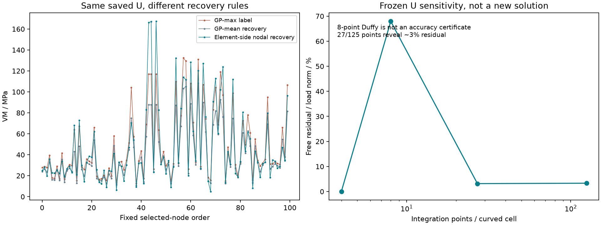

仅研究normal_rodv2_0095__tension；原始69290节点、41162个曲边TET10，原6100N拉伸。原几何、求解文件、训练缓存和标签均保持不变。新增两个610N诊断求解分别输出到本目录，不进入训练。
结论：未发现ID错位或本构应力公式计算错误；但当前“节点GT”带有明显的网格拓扑与恢复规则影响，局部应力精度尚未被原有收敛检查证明。不能用模型拟合差直接证明有限元错误，也不能把原4积分点的很小残差当作节点应力准确性的证明。

实际规则是：对每个TET10，取4个积分点VM的最大值，再把这个单元值分配给它的全部10个节点；每个节点再对相邻单元按原体积平均。它不是节点位置的直接应力，也不是有限元L2投影或唯一规定的节点恢复。
训练缓存的69290个VM标签按此规则复算完全一致。原节点/单元ID与FE输出一致，载荷一致。用保存位移、原曲边映射和独立NumPy本构公式重算4GP应力，张量相对L2差5.01×10⁻⁹；原内部力复算相对差3.32×10⁻¹¹。这排除了本次检查中的索引错位和显著应力公式差错。
6956与6954相距0.001432mm，都是边中点；分别连接6952–16和455–6952两条边，共享薄单元15787。6956还有两个较大相邻单元，共享薄单元只占其体积权重0.06345%；6954只连接两个薄单元，共享单元权重49.874%。所以它们混合的是非常不同的单元应力。
| 原节点 | 当前训练GT / MPa | 直接节点导数后体积平均 / MPa | 共同单元内该点VM / MPa |
|---|---|---|---|
| 6956 | 77.30297 | 84.32561 | 115.93272 |
| 6954 | 132.47360 | 113.94808 | 115.72259 |
在同一单元15787内，两点的直接应力只差约0.21MPa；平均其他相邻单元后仍有差异，但当前标签把差异放大到约55.17MPa。两种替代恢复只用来诊断敏感性，不能自动宣布哪一种是真值。位移有限元通常使位移连续，导数/应力允许跨单元不连续。
薄单元15787和48947的体积约1.23×10⁻⁴mm³，4GP几何Jacobian条件数最高约601和257；全网格最高约1.78×10⁶。Jacobian为正说明未倒置，不等价于高质量网格。原“网格收敛通过”检查的是区域应力RMS、位移和能量，没有验证这100个节点恢复标签逐点收敛。

密度选区也富集了畸变单元：采用几何Jacobian条件数大于100作为本次诊断阈值，选定100点中25点与此类单元相邻；全表面则为288/27730点（约1.04%）。此阈值不是官方合格线或新的剔除规则，原选区不变；这表明“最密”同时包含网格细碎程度的影响。
在同一原位移上，仅改变积分采样，原4GP自由残差约4.33×10⁻¹¹；27/125点时约3.17%/3.33%。这是固定解的积分敏感性，不是重新求解后的误差估计。总能量仅变化约0.0033%，说明全局能量稳定仍可能掩盖局部问题。
| 积分规则 | 积分点 | 原位移自由残差 / % | 能量变化 / % | 采样最大VM / MPa |
|---|---|---|---|---|
| Original symmetric4 | 4 | 4.3269e-09 | 0 | 530.415 |
| Positive Duffy Gauss 2^3 | 8 | 67.9426 | 0.319269 | 598.464 |
| Positive Duffy Gauss 3^3 | 27 | 3.16882 | 0.00297476 | 922.395 |
| Positive Duffy Gauss 5^3 | 125 | 3.33232 | 0.003271 | 1463.431 |
原4GP最大应力530MPa；密采样可见更高应力，125点最大1463MPa位于大端另一区域，并非本次小端100点。所选100点相邻单元的125点最大约256MPa。材料初始屈服阈值781.6MPa，所以原“未屈服”判断只保证采样的4GP，未证明全域弹性；这些密采样尖峰本身也未做网格收敛，不能直接当作真实材料屈服结论。
在10%载荷610N下，从零分别用原degree2和degree6体积积分求解，同一几何、边界与本构，仍在同4个物理GP位置比较应力，避免改变显示采样混淆结果。
全节点U相对差 0.0118%；选定100点U相对差 0.0131%；4GP应力相对差 2.7804%；同规则的100点节点标签相对差 0.5810%。
| 节点 | 10%载荷原4GP积分标签 / MPa | 10%载荷degree6积分标签 / MPa |
|---|---|---|
| 6956 | 7.73152 | 7.73811 |
| 6954 | 13.25182 | 13.38186 |
这是积分敏感性实验，不能当作6100N修正结果或网格收敛结论。本轮没有重建所有case、没有改训练标签，也没有把替代恢复数据混进模型评估。
1%训练误差衡量的是对这个派生标签的拟合，不是有限元相对真实解的误差。只给XYZ不会自然让近邻标签更平滑，也不保证同一网络更容易优化；删除CAD等特征还改变了不同case的区分条件。当前证据说明标签有网格依赖的高频成分，尚不能证明它是模型所有残差的唯一原因。
合理的下一项修正研究应先固定0095，比较改善薄单元后的独立网格、积分加密及明确的应力恢复定义，并在固定物理位置验证局部应力收敛；确认后再决定是否重新生成训练标签。
参考：DOLFINx官方应力输出示例（采用不连续应力空间）；Gmsh官方网格Jacobian与质量指标。
ID、本构与标签检查JSON · 近邻节点相邻单元权重CSV · 积分诊断JSON · 低载荷两次求解对照JSON · 100点诊断CSV